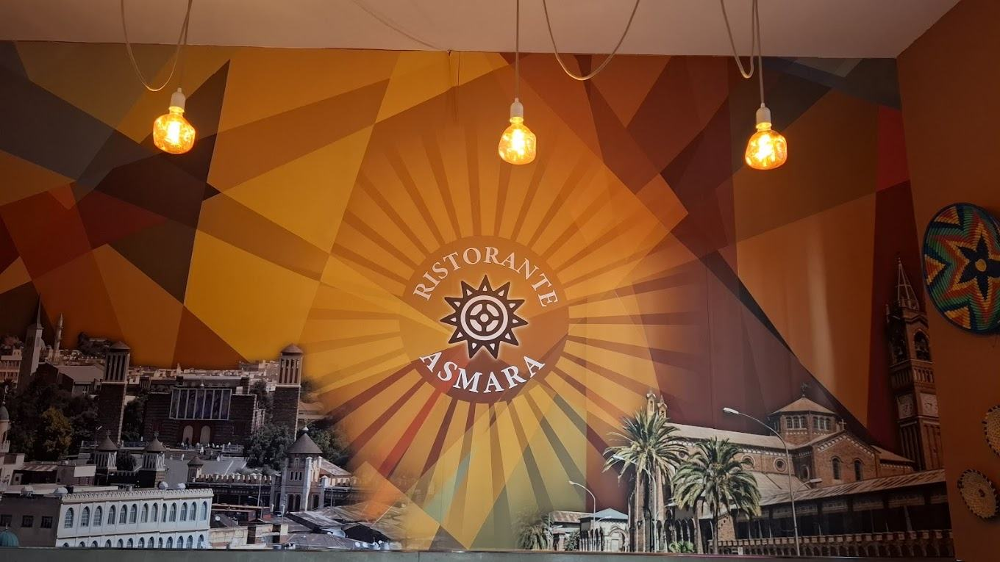
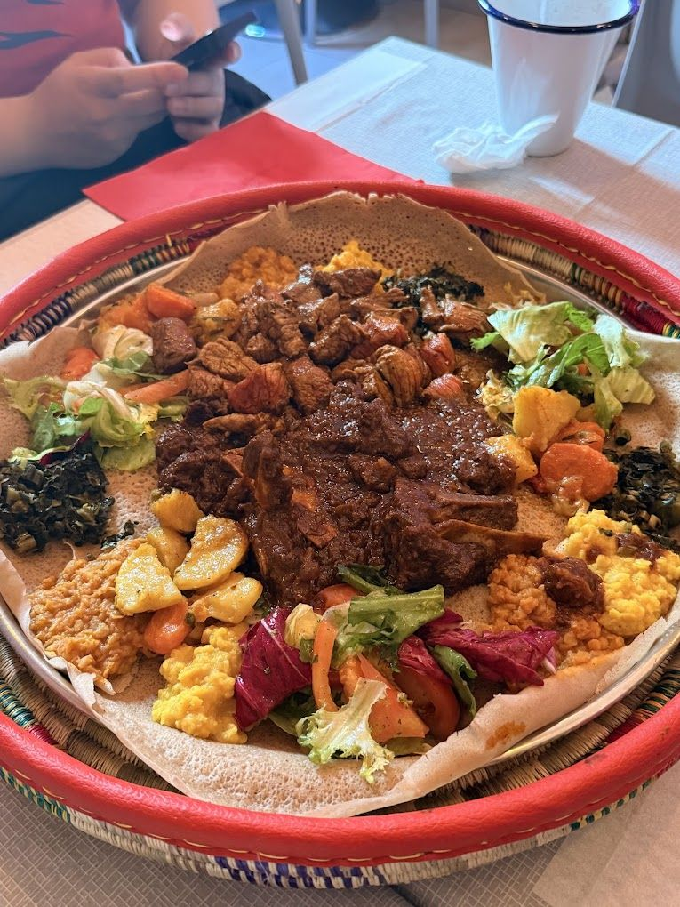
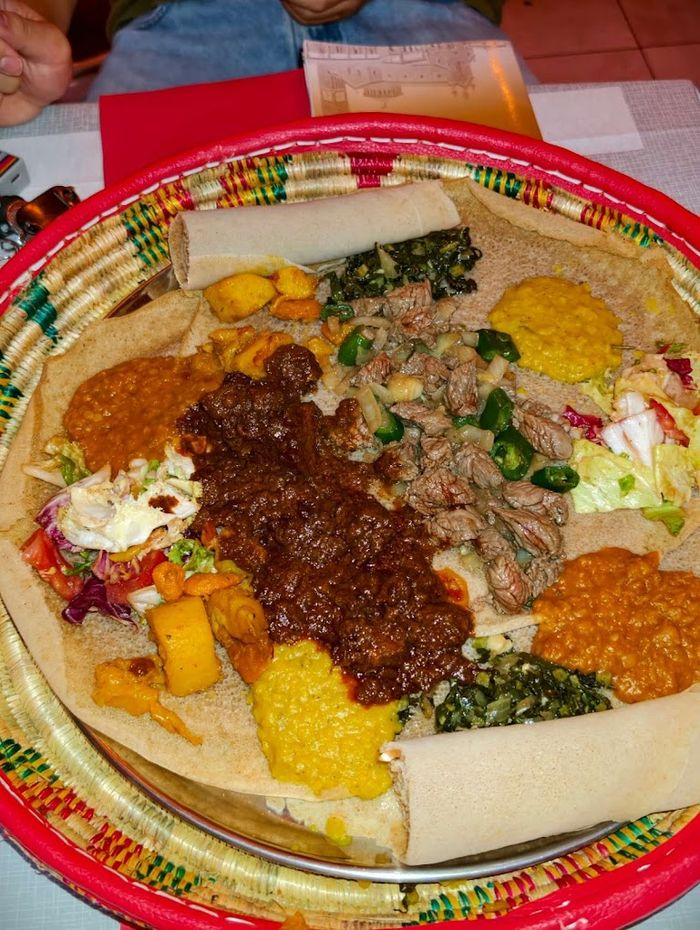
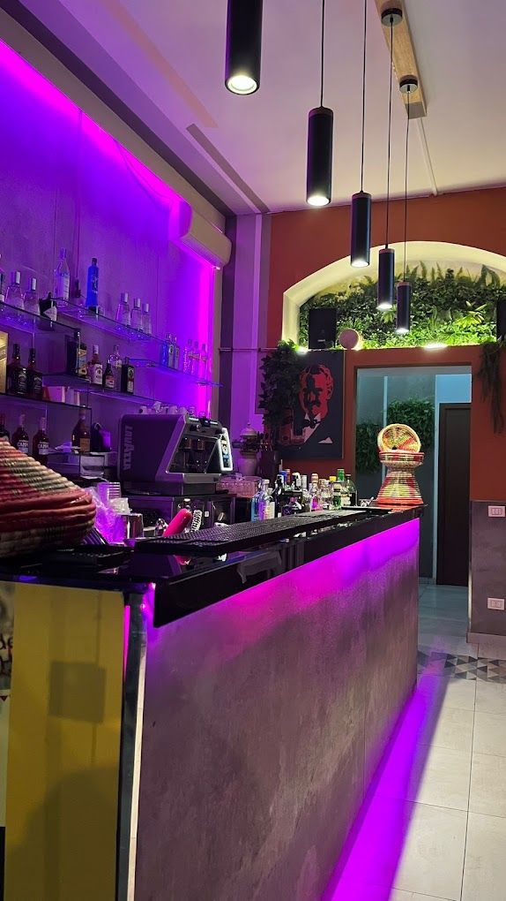
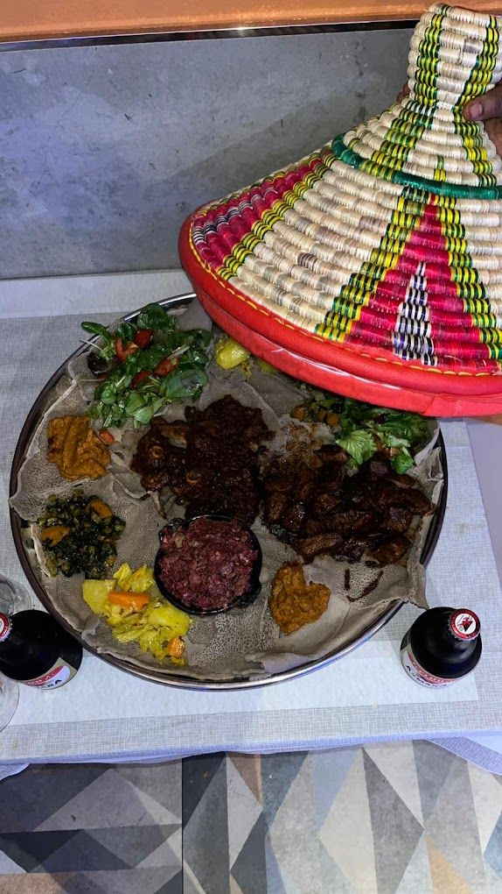

Zigni
Beef simmered long in berbere and spiced butter. The Eritrean cornerstone.
SignatureEritrean & Ethiopian dining · Porta Venezia, Milano
A city of modernist cinemas, espresso bars and wide palm boulevards — and of zigni, tsebhi and injera. Both halves are real, both are on this menu, and both are now in Milan.

The wall inside: Asmara's skyline, drawn from memory.
Asmara is one of the most complete modernist cities standing anywhere — Cinema Impero, the Fiat Tagliero service station, a whole 1930s skyline preserved by isolation. UNESCO listed the centre in 2017.
The food went the same way. Espresso and pasta stayed, but they were absorbed rather than imported: pasta arrives with berbere, and the macchiato is drunk beside a jebena.
This kitchen cooks both without apologising for either. Zigni and tsebhi derho on injera, and the Eritrean version of a plate of pasta on the same menu — served a few streets from Porta Venezia, the neighbourhood that has been the centre of Milan's Eritrean community for decades.
Shiro, hamli, alicha birsen, timtimo — vegan as normally cooked.
Macchiato and Italian coffee alongside the traditional buna.
Injera platters built for two or more.
In the shop

Zigni, hamli, shiro and alicha on one injera.

Beef simmered long in berbere and spiced butter.

Espresso by day, something longer after dinner.

Mesob beside the platter, the way it is set at home.
Come in
Call ahead for large groups, catering and anything you want held back.
| Mon | 10:30–23:00 |
|---|---|
| Tue | Closed |
| Wed–Sun | 10:30–23:00 |
Questions people ask
Eritrean cooking centres on injera — a sourdough flatbread of teff — served with slow-cooked stews such as zigni (beef in berbere), tsebhi derho (chicken and egg), shiro (ground chickpea) and hamli (collard greens). It shares much with Ethiopian cooking and also carries a strong Italian influence, particularly in coffee and pasta.
They overlap heavily and share injera, berbere and the same family of stews, with names differing by language — zigni in Tigrinya is close to key wat in Amharic. Eritrean menus more often carry Italian dishes such as pasta with a berbere-spiced sugo, a legacy of the colonial period in Asmara.
Yes. Because of the Orthodox fasting tradition, a large part of Eritrean cooking is vegan as standard — shiro, hamli, timtimo and alicha birsen are all on the menu without substitution.
Eritrea was an Italian colony from 1890 until 1941, and Asmara was rebuilt as an Italian modernist city. Espresso and pasta stayed and were absorbed into local cooking — pasta is commonly served with a berbere-spiced tomato sugo.
By hand. Injera is torn with the right hand and used to pick up the stews, acting as plate, bread and cutlery in one. Platters are shared from the centre of the table.
Ristorante Asmara is at Via Lazzaro Palazzi 17, 20124 Milano, near Porta Venezia — the neighbourhood that has long been the centre of Milan's Eritrean and Ethiopian community. It can be reached on +39 327 169 3973.